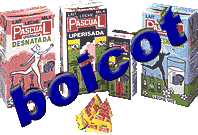

|

|
|
|
"Leche
Pascual" vol boicotejar als productors de llet catalans.
O sigui, que no comprarà ni un sol litre de llet procedent de Catalunya. Per què? Perquè la Generalitat ha criticat la llei que per procediment d'urgènciaha tramitat el "Gobierno Español" per equiparar els iogurs pasteuritzats amb els naturals. Finalment la marca "PASCUAL" s'ha sortit amb la seva, ha aconseguit que el seu producte làctic li puguin dir iogurt. Realment els postres làctics "PACUAL" no son iogurts, ja que els "bitxets" beneficiosos que porta el iogurt els han eliminat amb un xoc tèrmic. Per això no s'han de guardar a la nevera. Tots els efectes beneficiosos dels iogurts tenen, en aquest tipus de producte no només no hi son sinó que, a més a més, tenen moltes menys vitamines. |
Doncs bé, si "PASCUAL" FA BOICOT A CATALUNYA, CATALUNYA HA DE FER BOICOT A "PASCUAL". NO COMPRANT CAP PRODUCTE DE LA MARCA "PASCUAL" FINS QUE RECTIFIQUIN. Quins interessos tindrà el govern del PP en l'empresa "Hermanos Pascual" per prendre aquesta decisió, clarament beneficiosa per a dita empresa? "Leche PASCUAL", empresa de Valladolid, es propietat d'un company de classe del president Jose Mª Aznar. Què curiós, en aquella classe hi havia un munt de gent que ha fet sort en la vida. Us sona Vilallonga? Sabíeu que el 90 % del iogurts (reals, no els de "Pascual") es fan a Catalunya? |
|
- "Agua mineral Bezoya"
- "Zambra"
- Sucs "Zumosol"
- Cereals per esmorzar "Pascual"
- Llet, nata, biofruits, mantega, postres i desnatats "Pascual"
A més a més, menjar per animals de companyia: "Forzacan", "Duke", "Forzacat", "Pascan" i "Pasca"t - I finalment, mejar per bestiar de gra |